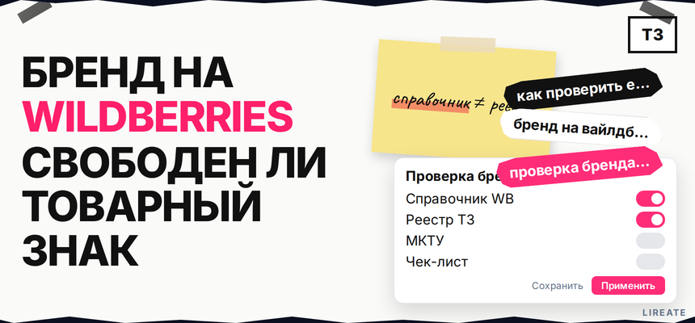
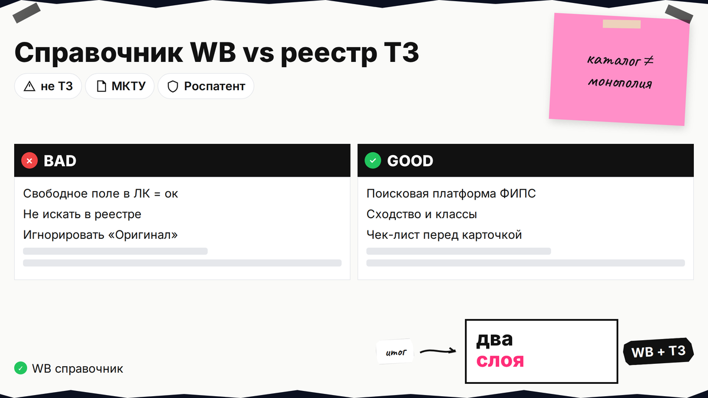
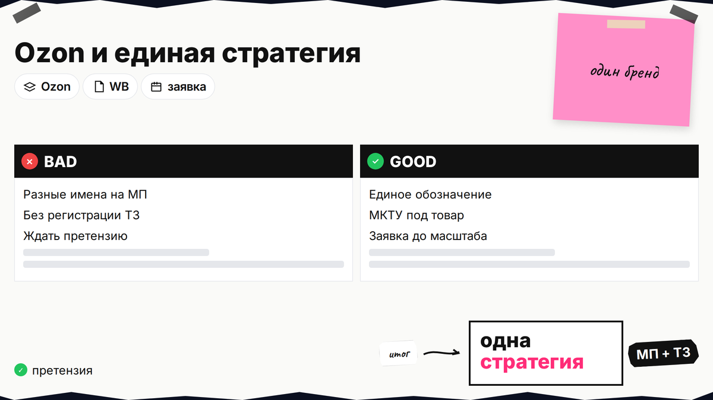

Вы придумали название для линейки товаров и перед выходом на Wildberries хотите понять, свободен ли бренд. Запрос "как проверить есть ли такой бренд на вайлдберриз" отвечает только на часть задачи: каталог площадки не равен государственному реестру товарных знаков. Ниже вы разделите эти базы, проверите имя в карточках WB и в Поисковой платформе Роспатента, оцените сходство и МКТУ, согласуете шаги с Ozon и пройдёте чек-лист перед заявкой и продажами.

TL;DR / Быстрый инсайт: Wildberries показывает, занято ли имя в справочнике маркетплейса для карточек, но не выдаёт монополию на обозначение. Товарный знак - запись в реестре Роспатента с классами МКТУ (международная классификация товаров и услуг - "в каких категориях" охраняется имя). Свободное поле в поиске WB не отменяет чужой ТЗ по ст. 1484 ГК РФ. Минимум два шага: поиск в ЛК и каталоге WB, затем проверка в Поисковой платформе с учётом однородности товаров.
Селлеры ищут "бренд на вайлдберриз как добавить" и путают свободную строку в карточке с юридической безопасностью. Претензия приходит от правообладателя ТЗ или модерации, когда имя бьётся с чужой охраной. Проверка укладывается в день, если заранее зафиксировать написание бренда и классы товаров.

Каталог брендов WB - внутренняя база для привязки названия к карточке, фильтрам и программам вроде "Оригинал". Реестр Роспатента - официальный список зарегистрированных товарных знаков с датой приоритета и перечнем классов МКТУ. Имя может отсутствовать в WB, но быть зарегистрированным на одежду или косметику у другого лица. И наоборот: на площадке десятки карточек с похожими названиями без ТЗ - это не разрешение копировать чужое обозначение.
| База | Что показывает | Чего не показывает |
|---|---|---|
| Wildberries | Есть ли бренд в справочнике, карточки с этим именем | Полную картину по всем ТЗ РФ и приоритетам |
| Роспатент | Правообладатель, классы МКТУ, статус знака | Правила модерации конкретной карточки WB |
| Ваши продажи | Риск претензии при совпадении товара и знака | Автоматическую "рекомендацию" имени от маркетплейса |
Делайте: записать в таблице два столбца "WB" и "Роспатент" для одного и того же написания бренда. Не делайте: считать проверку на маркетплейсе заменой проверки перед подачей в Роспатент.

Если имя в WB занято, ЛК может запросить документы. Если в реестре есть ТЗ для однородных товаров, продажи под тем же именем без согласия правообладателя нарушают ст. 1484.
Делайте: проверить и слово, и будущий логотип, если он отличается от чистого текста. Не делайте: менять одну букву "для обхода" без оценки сходства до степени смешения.
Сходство - насколько ваше имя или знак похож на чужой визуально и на слух. Однородность - относятся ли товары к одному рынку (например, спортивные костюмы и повседневная одежда часто близки). Роспатент смотрит на классы МКТУ, но спор возможен и в соседних классах, если покупатель может перепутать происхождение.
| Сигнал | Где видно | Что сделать |
|---|---|---|
| Тот же бренд в WB | Карточки конкурентов | Уточнить права у правообладателя или сменить обозначение |
| Метка "Оригинал" | Карточка на WB | Не копировать чужую айдентику; у авторизованных продавцов иные документы |
| Активный ТЗ в классе | Реестр | Подобрать новое имя или лицензию; см. ст. 1484 |
| Заявка "в процессе" | Реестр, статус заявки | Дождаться решения или выбрать запасной вариант |
Схема: написание бренда → поиск WB → поиск Роспатента → классы МКТУ → вывод "свободно / риск / занято" → решение о регистрации или переименовании
Делайте: сопоставить ваш товар с классами 01-34 (товары) из перечня в карточке знака. Не делайте: игнорировать знак в другом классе, если вы продаёте тот же товар под тем же именем на WB.
Один бренд на WB и Ozon экономит рекламу, но без ТЗ риск претензий выше. Площадки могут запросить свидетельство при модерации. Порядок - в гайде по регистрации на Ozon и Wildberries.
| Шаг | Wildberries | Ozon | Роспатент |
|---|---|---|---|
| Выбор имени | Поиск в справочнике | Поиск в кабинете бренда | Поисковая платформа + МКТУ |
| Документы | По правилам ЛК на дату публикации | Сертификат / заявка по правилам Ozon | Свидетельство после регистрации |
| Стратегия | Один бренд, один набор классов МКТУ под линейку товаров | ||
Делайте: заранее выбрать классы под все SKU, которые планируете в течение года. Не делайте: регистрировать ТЗ только на "безделушку" в классе, а продавать на WB основной товар в другом классе без расширения перечня.
Храните свидетельство и переписку с WB/Ozon - это ускорит споры и программы для бренда.
Делайте: пройти чек-лист до заказа первой крупной партии с упаковкой под новым именем. Не делайте: печатать тираж с непроверенным брендом "пока идёт модерация".
Если реестр показывает чужой ТЗ, меняют обозначение, сужают линейку или покупают лицензию. Продажи под занятым именем грозят блокировкой и требованиями по ст. 1515 ГК РФ. Письма правообладателя сохраняйте с указанием имени и SKU.
Делайте: обратиться за разбором сходства до подачи заявки, если сомневаетесь. Не делайте: добавлять чужой бренд в карточку "как в фильтре", чтобы попасть в выдачу.
Итог простой: проверка на Wildberries нужна для карточки, но юридическая свобода имени проверяется в реестре с учётом МКТУ. Согласуйте шаги с регистрацией на маркетплейсах, оформите ТЗ до масштабирования бренда. Другие материалы по теме - в рубрике "Бренд" на Лирейт.
Материал проверен: редакция Лирейт, практика регистрации товарных знаков для селлеров маркетплейсов.
Достоверность данных: ст. 1484, 1515 ГК РФ сверены с открытыми текстами на 29.10.2026. Поисковая платформа Роспатента и правила ЛК Wildberries/Ozon уточняйте в актуальных инструкциях площадки на дату выхода. Ключевые запросы сверены по SEO-сводке и Яндекс Вордстат на октябрь 2026.
Нет. Справочник WB показывает занятость имени на площадке, но не заменяет поиск в реестре Роспатента. Чужой товарный знак может быть зарегистрирован, даже если в WB имя ещё не встречается в карточках.
Да, если ваше обозначение не нарушает чужие ТЗ и правила площадки. Без регистрации вы не получаете монополию на имя: конкурент может подать заявку раньше или оспорить сходное название.
Обычно при создании карточки выбирают бренд из справочника или создают новый по правилам ЛК. Если площадка запрашивает документы, подготовьте свидетельство на ТЗ или иные подтверждения прав на имя согласно актуальной инструкции WB.
Не обязательно. Это лишь отсутствие записи в базе маркетплейса. Перед подачей заявки проведите поиск сходных знаков в нужных классах МКТУ.
Это не делает имя общественным достоянием. Правообладатель с зарегистрированным ТЗ или с более ранним приоритетом может ограничить использование. Ваш риск выше, если название созвучно известному знаку.
Не обязателен, но единое имя упрощает рекламу и упаковку. Проверку и регистрацию ТЗ делайте один раз под обе площадки и офлайн, если планируете расширение.
Когда имя выбрано, проверка в реестре чистая или риски просчитаны, и вы вкладываетесь в упаковку, рекламу и долгую линейку SKU. Регистрация занимает месяцы, поэтому не откладывайте до первого крупного заказа с брендированием.